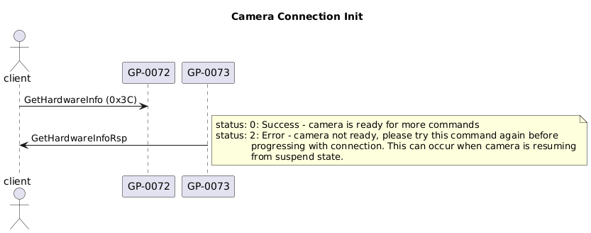

BLE Setup
Before sending and receiving data, it is first necessary to configure the BLE connection for communication.
Below is an overview of setting up communication. See the relevant section below for more information:
Ensure the camera is connectable and in pairing mode
Scan to discover advertisements from GoPro peripheral devices (which can be narrowed by limiting to peripherals that advertise service 0xFEA6)
Connect to a discovered peripheral device
Finish pairing with the peripheral device
Discover all advertised services and characteristics
Subscribe to notifications from all characteristics that have the notify flag set
Perform GoPro-specific-setup
Pairing Mode
In order for the camera to be discoverable and allow connections, it must first be put into pairing mode via the camera UI.
Advertisements
Once in pairing mode, the camera will send BLE advertisements while it is ON and for the first 8 hours after the camera is put to sleep. During this time, the camera is discoverable and can be connected to. If the camera is in sleep mode, connecting to it will cause the camera to wake and boot up.
The following sections detail the Advertising and Scan Response data. This data consists of BLE Spec defined Type-Length-Value fields such as Manufacturer Specific Data and Service Data. These fields are identified via the “AD Type” column where the integer value is specified in Section 2.3 of the Bluetooth Assigned Numbers.
Advertising Data
| AD Type | Byte(s) | Description | Bit Documentation | Notes |
|---|---|---|---|---|
| Flags (1) | 0 | Flags Length | Always 2 | |
| 1 | Flags AD Type | Always 1 | ||
| 2 | Flags | See section 1.3 of the BLE Spec Core Supplement | ||
| Incomplete 16-bit Service UUIDs (2) | 3 | UUIDs length | Always 3 | |
| 4 | UUIDs AD type | Always 2 | ||
| 5-6 | UUIDS | Little Endian. Always 0xFEA6. This can be used to filter for GoPros | ||
| Manufacturer Data (16) | 7 | Manufacturer Data Length | Always 15 | |
| 8 | Manufacturer Data AD Type | Always 0xFF | ||
| 9-10 | Company ID | Always 0xF202 | ||
| 11 | Schema ID | Always 2 | ||
| 12 | Camera Status | Bit 0: Processor State | 0 == low power, 1 == awake | |
| Bit 1: WiFi AP State | 0 == off, 1 == on | |||
| Bit 2: Peripheral Pairing State | 0 == not pairing, 1 == pairing | |||
| Bit 3: Is Central Role Enabled? | ||||
| Bit 4: Is New Media Available? | ||||
| Bits 5-7: Reserved | ||||
| 13 | Model ID | See Supported Cameras table | ||
| 14 | Camera Capabilities | Bit 0: Command and Control | Supports Command, Settings, and Query characteristics | |
| Bit 1: BLE Metadata | LE Sensor Data GATT Characteristics | |||
| Bit 2: Wideband Audio | ||||
| Bit 3: Concurrent Master Slave | ||||
| Bit 4: Onboarding | Supports Onboarding 2.0 | |||
| Bit 5: New Media Available | Supports status bit for New Media Available | |||
| Bits 6-7: Reserved | ||||
| 15-21 | Reserved | |||
| 22 | Media Offload Status | Bit 0: Available | ||
| Bit 1: New Media Available | ||||
| Bit 2: Battery OK | ||||
| Bit 3: SD Card OK | ||||
| Bit 4: Busy | ||||
| Bit 5: Paused | ||||
| Bits 6-7: Reserved |
Scan Response Data
| AD Type | Byte(s) | Description | Notes |
|---|---|---|---|
| Local Name (9) | 0 | Local Name Length | Always 11 |
| 1 | Local Name AD Type | Always 9 | |
| 2-11 | Local Name | ASCII Camera Name, i.e. “GoPro 1234” | |
| Service Data (22) | 12 | Service Data Length | Always 11 |
| 13 | Service Data AD Type | Always 22 | |
| 14-15 | Service Data UUID | Always 0xFEA6 | |
| 16-19 | AP MAC Address | ||
| 20-23 | Partial Serial Number | Last 4 digits of the serial number as ASCII |
Finish Pairing
In order to communicate with a GoPro camera via BLE, a client must first be paired with the camera. The pairing procedure must be done once for each new client. If the camera is factory reset, all clients will need to pair again. The camera will store pairing information so subsequent connections with this client do not require pairing.
Configure GATT Characteristics
In order to enable two-way communication with a GoPro camera, clients must subscribe to characteristics that have the notify flag set. Best practice is to query the GATT table to dynamically discover all notifiable characteristics. Alternatively, see the GATT table below.
Warning
The GoPro device does not support the BLE feature of caching these subscriptions so the characteristics must be re-subscribed for upon each connection.
BLE Characteristics
Note
GP-XXXX is shorthand for GoPro’s 128-bit UUID: b5f9XXXX-aa8d-11e3-9046-0002a5d5c51b
| Service UUID | Service | Characteristic UUID | Description | Permissions |
|---|---|---|---|---|
| GP-0001 | GoPro Wifi Access Point | GP-0002 | WiFi AP SSID | Read / Write |
| GP-0003 | WiFi AP Password | Read / Write | ||
| GP-0004 | WiFi AP Power | Write | ||
| GP-0005 | WiFi AP State | Read / Indicate | ||
| GP-0090 | GoPro Camera Management | GP-0091 | Network Management Command | Write |
| GP-0092 | Network Management Response | Notify | ||
| FEA6 | Control & Query | GP-0072 | Command | Write |
| GP-0073 | Command Response | Notify | ||
| GP-0074 | Settings | Write | ||
| GP-0075 | Settings Response | Notify | ||
| GP-0076 | Query | Write | ||
| GP-0077 | Query Response | Notify |
Send Messages
Messages are sent to the camera by writing to a write-enabled UUID and then waiting for a notification from the corresponding response / notification UUID. Responses and notifications indicate whether the message was valid and will be (asynchronously) processed. For example, to send a camera control command, a client should write to GP-0072 and then wait for a response notification from GP-0073.
See the following Protocol sections for steps to build and parse messages.
GoPro Setup
This section details the GoPro-specific steps that are needed to configure / prepare the camera for communication
Wait for Camera BLE Readiness
It takes some time for the camera’s BLE communication to become ready after establishing connection. In order to verify
readiness, the client shall continuously poll Get Hardware Info until it returns a success status.
